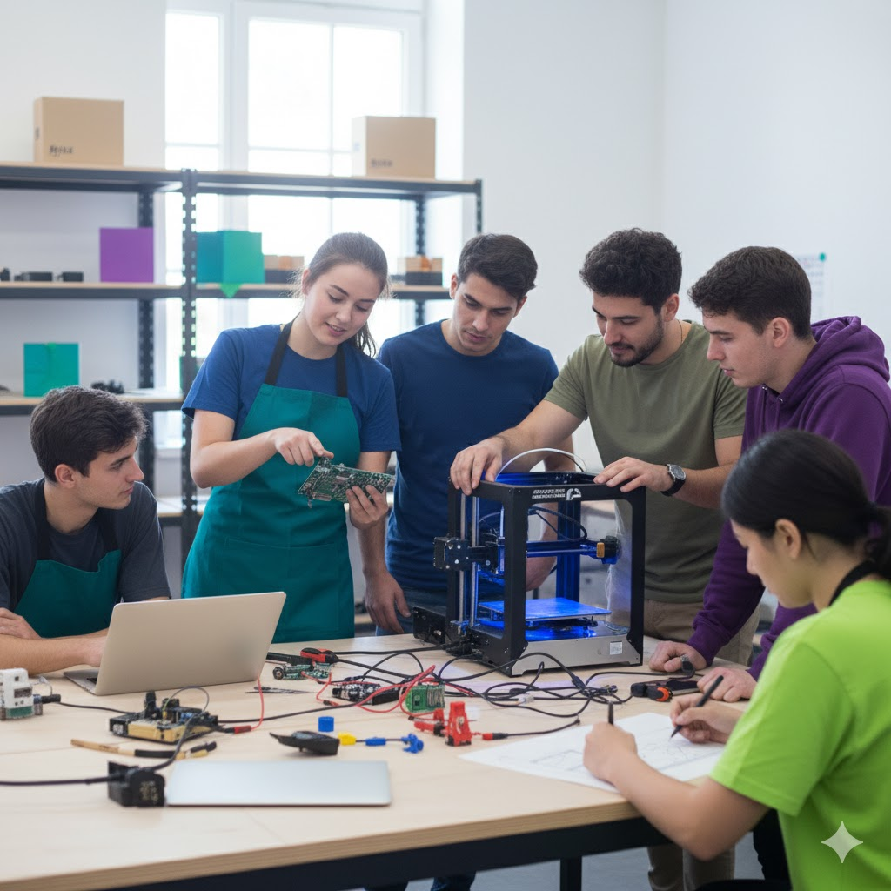
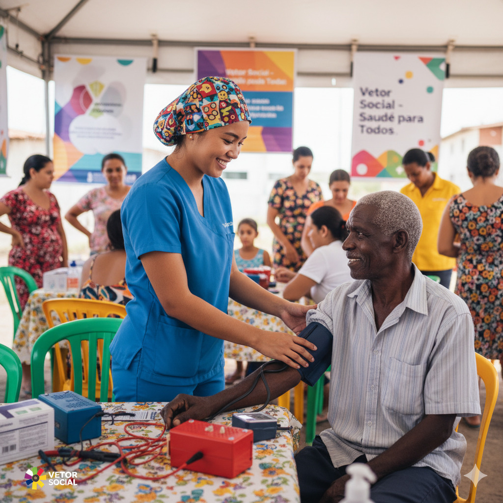
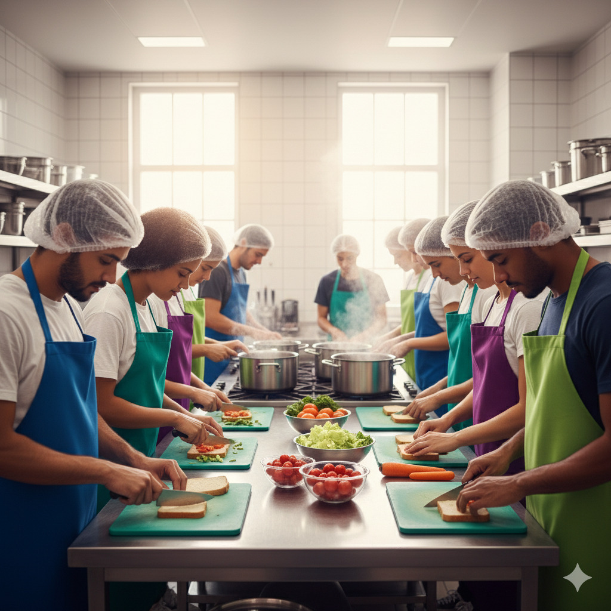
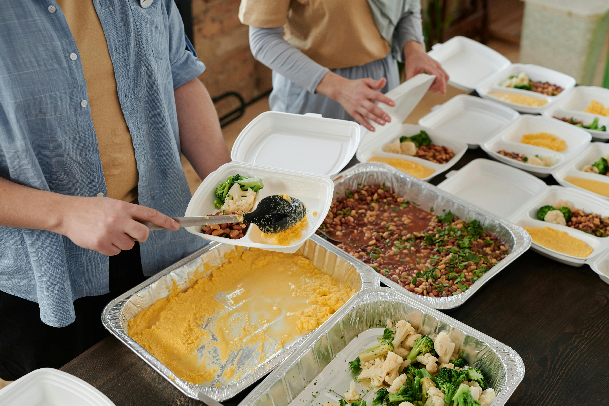

Conectamos Pessoas para Transformar Comunidades
Somos uma plataforma que une voluntários, doadores e organizações para criar impacto social real através de projetos educacionais, ambientais e assistenciais.



Nosso Impacto em Números
Cada número representa vidas transformadas e comunidades fortalecidas
Projetos em Destaque
Conheça alguns dos projetos que estão transformando comunidades

Alimentação Solidária
O programa Alimentação Solidária oferece refeições nutritivas todos os dias para pessoas em situação de rua, acompanhadas de escuta e orientação social. Além de garantir acesso à alimentação de qualidade, o projeto promove saúde, dignidade e novas possibilidades de reintegração social.
75%Saúde Mental na Comunidade
O projeto Saúde Mental na Comunidade oferece apoio psicológico gratuito para famílias em situação de vulnerabilidade. Por meio de atendimentos individuais, rodas de conversa e oficinas de bem-estar, busca fortalecer vínculos, promover o autocuidado e combater o estigma em torno da saúde emocional.
60%Educação Digital para Todos
O programa Educação Digital para Todos leva conhecimento em tecnologia a comunidades com pouco acesso à informação. Oferece cursos gratuitos de informática básica e cidadania digital, preparando jovens e adultos para o mercado de trabalho e fortalecendo a inclusão social através da educação.
65%O Que Dizem Nossos Voluntários
Histórias reais de pessoas que fazem a diferença
"Fazer parte da Vetor Social transformou minha vida. Ver o impacto direto do meu trabalho na comunidade é indescritível."
"A organização e o profissionalismo da equipe fazem toda a diferença. Juntos, conseguimos muito mais, é incrível fazer parte disso."

"Ensinar crianças e ver seus olhos brilhando com o aprendizado é a maior recompensa que posso ter. Amo fazer parte disso."
Pronto para Fazer a Diferença?
Junte-se a centenas de voluntários que estão transformando vidas. Sua contribuição pode ser o início de uma grande mudança.